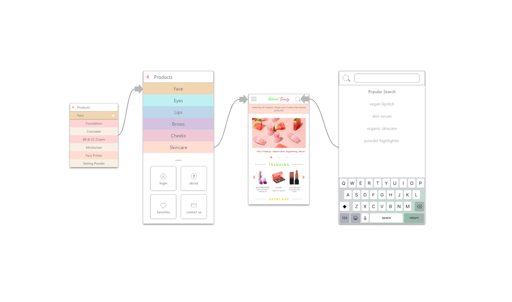
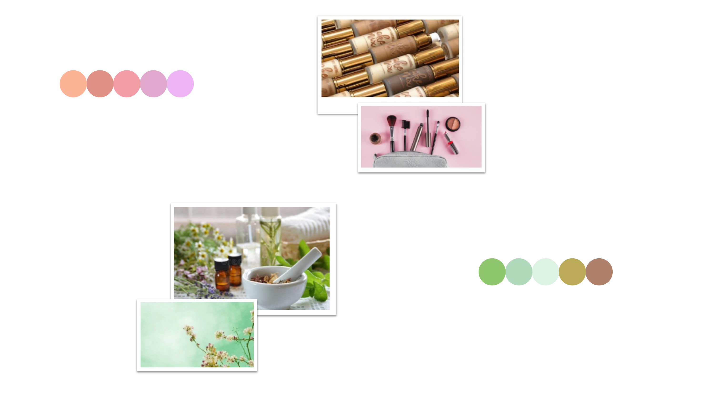

.gif)
About
Natural Beauty is a concept for a web and mobile-based application, inspired by the push for environmental sustainability in the beauty industry. This project, created using Adobe XD, features two high-fidelity digital prototypes of a mobile and web-based interface supplemented by the elements of UI Design.
The application presented, Natural Beauty, is a vast online library of cosmetic products, which are available for purchase on their respective webpages. This app is targeted for consumers interested in purchasing organic, vegan, and cruelty-free cosmetics, and is intended to market eco-friendly cosmetics by increasing accessibility for these products. The FAQ section on the app details the purpose of the project and why it matters.
iOS Application
The primary focus of the project is on the mobile app, intended for iOS devices. The interface supports vertical scrolling, thus the length of the mock-up at each stage of the flow varies.
The home screen introduces the user to the application, displaying a dynamic slideshow of eye-catching photographs of the products.
Navigation
The interface supports database-wide navigation, featuring a search bar, as well as a drop down menu with several options. Ease of access is supported on the topmost bar of every page by simple, easily identifiable icons such as home, search, and menu.

Search Filtering
Searches can be fine-tuned with filters, narrowing down products based on specific tags.
The default search applies no filters, and shows all products within the category.

Personalization
The app features a Login, My Account, and Favorites page that saves user data.


Product Page
This product page features the brand name, product name, and official images of the product supplied by the manufacturer.
Each product is assigned with labels: Cruelty-free, Vegan, Organic.
Additional information is provided, such as available shades, ingredients, and instructions for use.
Users have the option to favorite the product, or purchase it directly on the product website.
The User Flow for viewing shade range options of a product.
FAQ
I condensed a brief summary of the product into five simply answered questions.
Bright, eye-catching images and an appeal to pathos were combined to produce these answers.
Design
The color scheme of the design invokes feelings within users.

Using these palettes, I was able to increase product appeal by conveying feelings of relaxation and wellness.